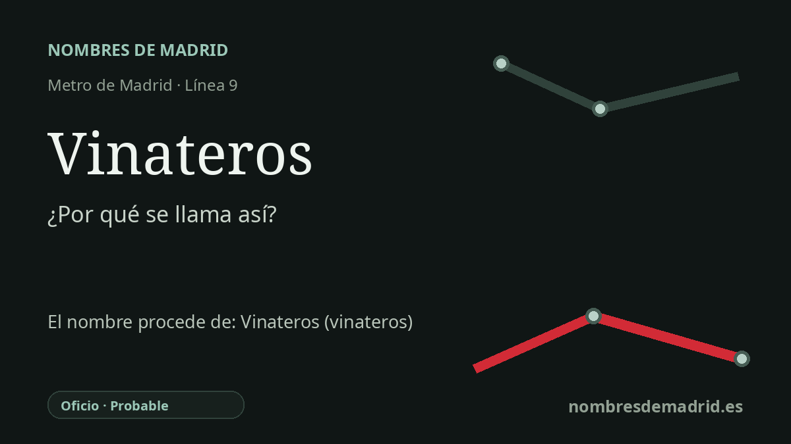

Publicado el · Investigación de Nombres de Madrid · Cómo verificamos cada origen · 8 fuentes consultadas
Respuesta rápida
Vinateros toma su nombre de la calle o Camino de los Vinateros, un nombre viario histórico de Moratalaz. La palabra vinatero designa a una persona dedicada a producir o comerciar vino, y la tradición local vincula la ruta con la entrada de vino a Madrid desde el sureste.
La historia del nombre
Vinateros es, ante todo, una estación llamada por la calle en la que se encuentra. El Consorcio Regional de Transportes sitúa sus accesos en la calle del Camino de los Vinateros y confirma su servicio en la línea 9 de Metro, dentro del distrito de Moratalaz. Por tanto, el nombre del metro conserva el nombre del camino y no conmemora a una persona concreta.
La palabra antigua que hay detrás del topónimo es clara. La RAE define vinatero como la persona vinculada a la producción o al comercio del vino, y la tradición local interpreta Camino de los Vinateros como el camino de quienes trataban con el vino: productores, arrieros o comerciantes que lo llevaban hacia Madrid. Por eso el nombre funciona como un topónimo de oficio, aunque su fuente inmediata sea una calle.
El camino no es solo una denominación moderna. La investigación sobre Moratalaz basada en planos del siglo XIX identifica el Camino de Vinateros entre las rutas que atravesaban la zona, y señala que el plano del IGN de 1862 muestra Vinateros como camino y como lugar en la parte norte del actual Moratalaz. Esto es importante porque gran parte del distrito se urbanizó en el siglo XX; el nombre de la estación lleva al plano del metro una geografía rural anterior.
La relación con el vino también encaja con la geografía. El pliego oficial de la DOP Vinos de Madrid incluye la subzona de Arganda, al sureste de la capital, y recoge la larga historia del vino en la región madrileña, con reconocimiento oficial de la denominación moderna en 1990. Un artículo de historia vinícola sobre el Camino de los Vinateros afirma expresamente que por este antiguo camino entraba vino a Madrid desde la zona de Arganda y también desde La Mancha, primero con caballerías y carros y más tarde en relación con el conocido tren de Arganda.
La afirmación más sólida es que la estación toma su nombre de la calle o Camino de los Vinateros, un camino y topónimo antiguo de Moratalaz cuyo significado remite a productores o comerciantes de vino. La explicación más pintoresca sobre rutas exactas y cantidades de vino es una tradición local bien apoyada, no un hecho probado por un expediente oficial de rotulación. El tramo de la línea 9 que dio servicio a Moratalaz fue inaugurado el 30 de enero de 1980 y la apertura al público suele fecharse el 31 de enero de 1980, de modo que el nombre pertenece a la primera generación de estaciones de la línea 9 en el distrito.